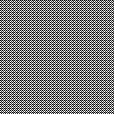
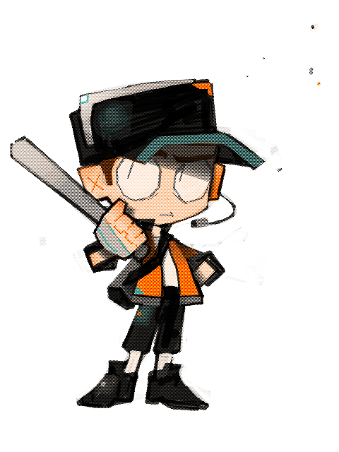
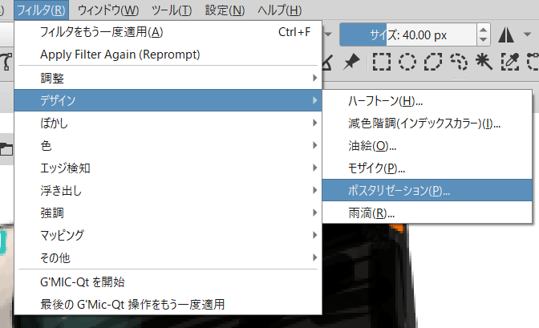
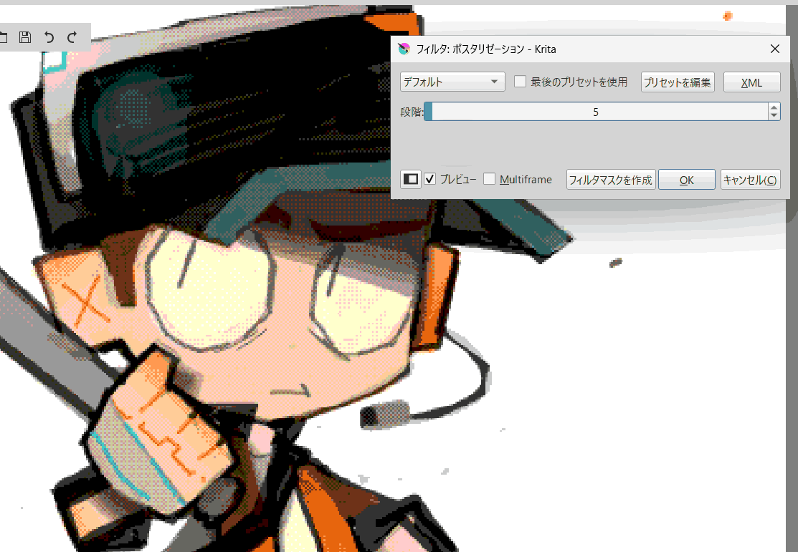
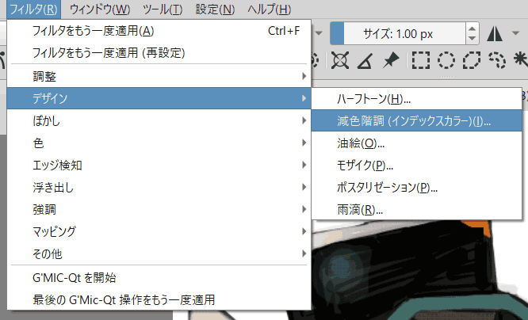
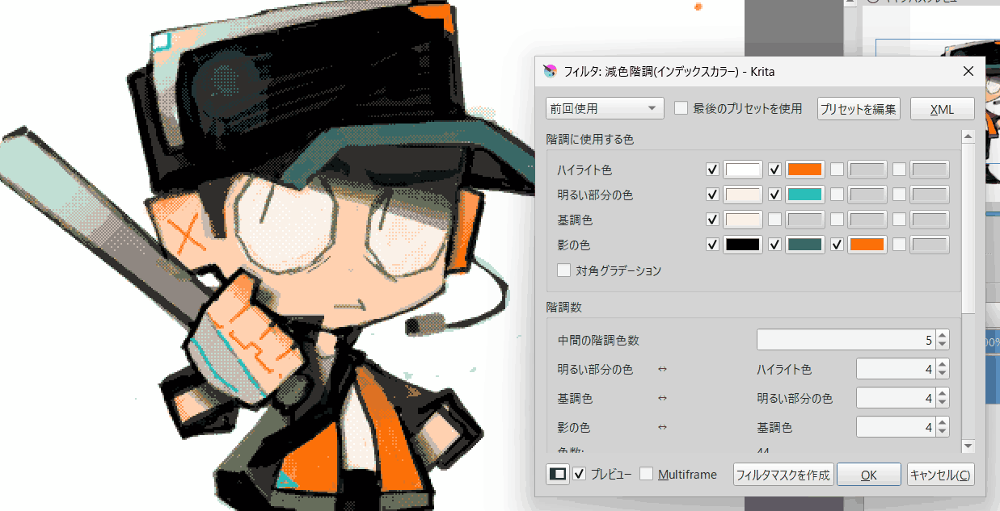

[1] まずは何でもいいので絵を用意してください。グラデーションが多ければ多いほどディザリングが綺麗になります。キャンバスサイズは小さめにすることをお勧めします。
[2] ピクセルテクスチャのようなパターン画像を用意してください。

[3] 新しいレイヤーを追加してキャンバス全体を覆うように貼り付け、レイヤースタイルを「オーバーレイ（overlay）」にしてください。

[4] パターンの不透明度を15%ぐらいに下げ、イラストのレイヤーと結合してください。
[5] 「ポスタリゼーション（Filter ＞Posterize）」フィルターを開きます。

[6] 好みの質感になるまで数値を下げてください。10以下がおすすめです。色が変になりますが、気にしないでください。

[7] 「減色諧調（Filter ＞Index Colors）」フィルターを開きます。

[8] 好きな色を配置して、納得がいくまで調整すれば完成です。

2026/10/08
 Kritaでのディザー加工覚え書き
Kritaでのディザー加工覚え書き